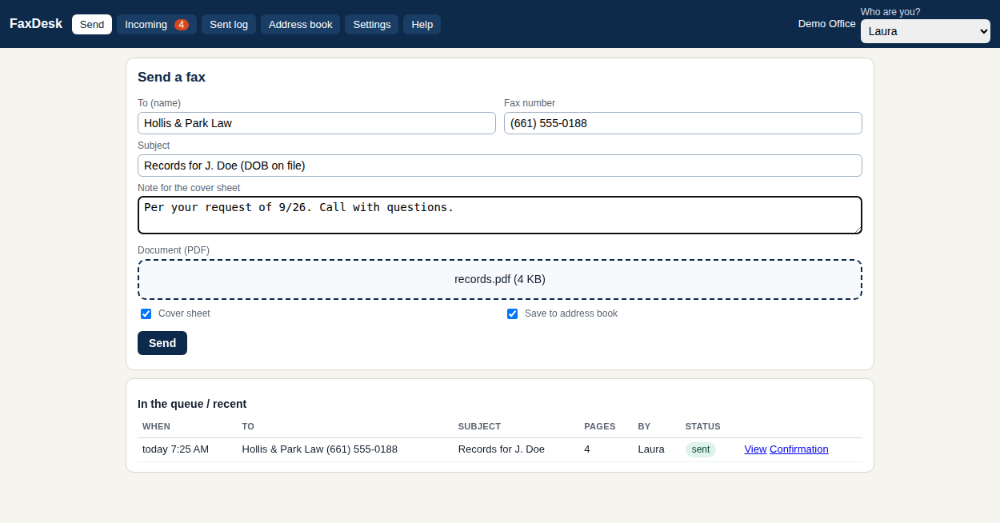
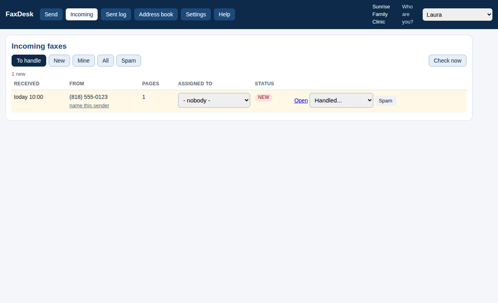

FaxDesk is a small free program. Drop a PDF, it goes out with a cover sheet. Incoming faxes show up on the page, get assigned to a person and marked handled. Everything stays on your computer.
Download FaxDesk (Windows) See how it works

FaxDesk.exe (Windows 10/11). Mac: download the zip and double-click FaxDesk.command (needs Python 3).Do I need a Phone.com account? Yes, today. FaxDesk started on Phone.com and that is the tested path; other services are coming, and you can ask for yours. If you do not have a line yet, phone.com gets you a fax number.
How do I get the API key? Ten minutes, once: Get your Phone.com API key walks through it with screenshots-free plain steps.
Is it really free? Yes. Every feature, no page limits, no time limit, no nag, on one PC. The only paid option is opening the same inbox to every desk on your office network: $99 one time per office.
Is it secure? Your token is stored sealed to your Windows account. Faxes are files on your PC. FaxDesk never sends anything anywhere except to Phone.com to fax it: no cloud account, no telemetry, no update checks.
Is it HIPAA compliant? No software is, by itself. FaxDesk keeps your faxes on your own PC and adds no third party; your Business Associate Agreement stays between you and Phone.com. Set the retention days to match your policy.
Does it work on a Mac? Not yet as an app. It is plain Python, so it runs on a Mac from source (FaxDesk.command in the download); a packaged Mac app comes when enough people ask.
Windows says "Windows protected your PC". That is SmartScreen reacting to a new, not-yet-signed download. Click "More info", then "Run anyway". Signed releases are on the way; see the code signing policy.
Can several people use it? On one PC, yes: pick your name and work. To use it from other desks you need the whole-office key, which turns on the office-network switch. Then every desk opens the same page in a browser; nothing to install on those PCs.
Will it delete faxes at Phone.com? No. FaxDesk only reads from Phone.com. What you delete in FaxDesk is deleted on your PC.
Who made this? Frye Chiropractic, a multi-doctor practice in Lancaster, California, built it for its own front desk on its Phone.com line and decided to give it away. It is published by HnS, LLC and the code is open on GitHub under the MIT licence.
Support? help@freefaxdesk.com. If FaxDesk saves you time, buy us a coffee.